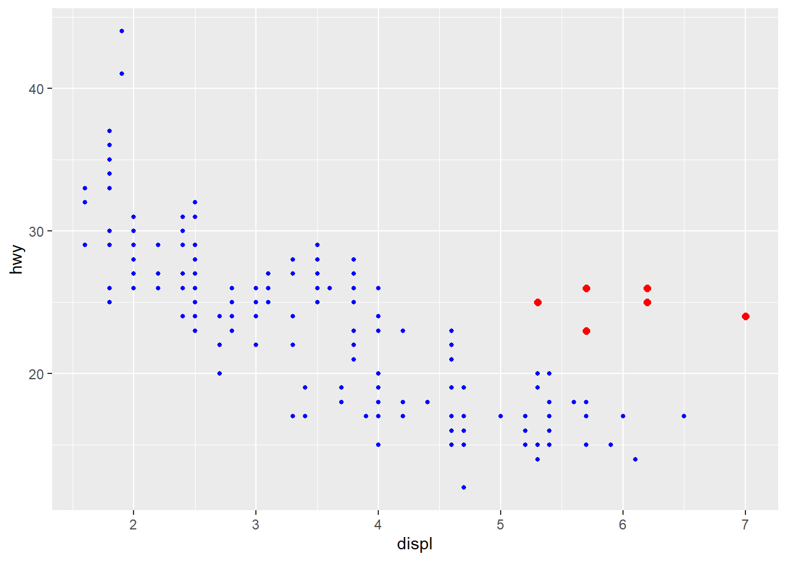
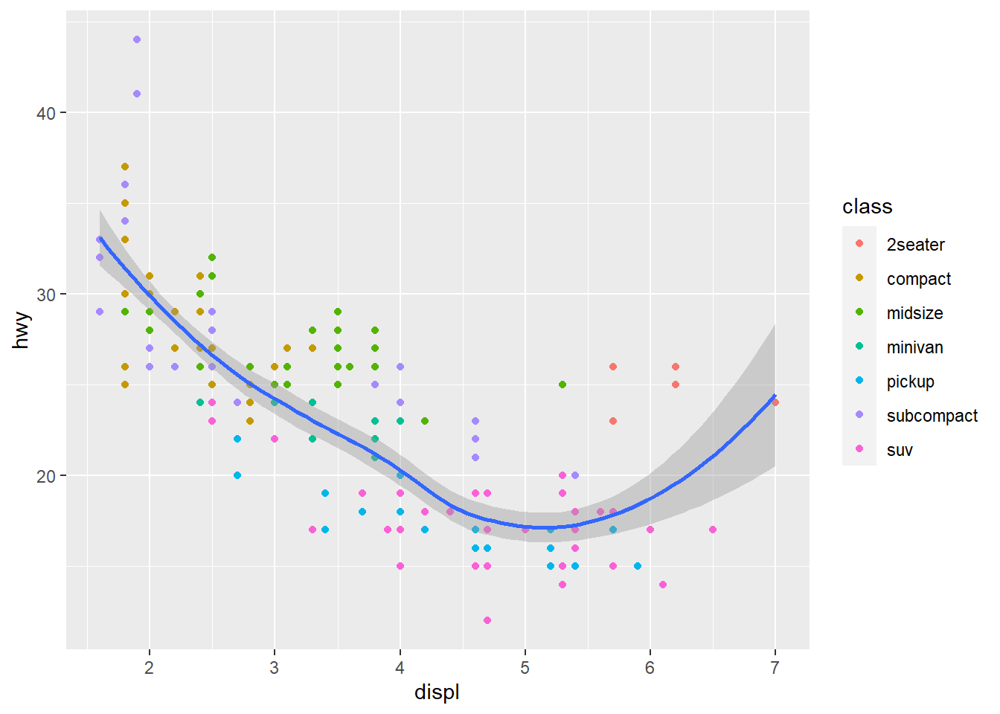
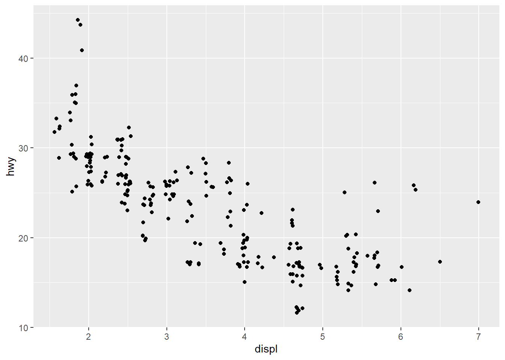

“Простой график принес аналитику данных больше информации , чем какое-либо устройство”, ” — Джон Тьюки.
Визуализация является очень важным этапом анализа данных, который может выполнять как вспомогательные, так и свои собственные, самостоятельные функции.
Мы уже освоили основы отбора и трансформации данных (tidy and transofrm), теперь настал черед познакомиться с некоторыми возможностями визуального представления данных, которое, наряду с моделированием, собственно и формирует исследовательский процесс:
На сегодняшнем занятии мы научимся визуализировать данные, используя возможности библиотеки ggplot2. Вообще-то, в R есть различные способы создания графиков (на следующих занятиях мы обязательно попробуем разные), но библиотека ggplot2 является одной из наиболее продвинутых, чьи основы часто используются другими библиотеками (например, библиотекой для работы со шкалами Ликерта likert).
Считается, что обучение визуализации с помощью ggplot2подходит для тех, кто только начинает осваивать программирование (хотя есть и те, кто считает ggplot2 слишком сложным, поскольку график задается эксплицитно - мы должны в ручном режиме прописать все параметры, включая оформление, цвета, надписи осей и прочие элементы, которые excel, например, дает по умолчанию), а понимание графической “грамматики” - правил, на основе которых строются графики, дает практически безграничные возможности в плане представления результатов анализа данных. Возможно, по началу, вам будет казаться, что код громоздкий и что диаграммы в excel было бы сделать намного проще, со временем вы сможете понять всю красоту и гибкость такой визуализации.
Посколькуо библиотека ggplot2 является важным членом семьи tidyverse, чтобы получить доступ к встроенным наборам данных, справочным страницам и функциям, мы должны загрузить библиотеку tidyverse с помощью уже известной нам функции library():
library(tidyverse)
── Attaching core tidyverse packages ──────────────────────── tidyverse 2.0.0 ──
✔ dplyr 1.1.4 ✔ readr 2.1.5
✔ forcats 1.0.0 ✔ stringr 1.5.1
✔ ggplot2 3.4.4 ✔ tibble 3.2.1
✔ lubridate 1.9.3 ✔ tidyr 1.3.1
✔ purrr 1.0.2
── Conflicts ────────────────────────────────────────── tidyverse_conflicts() ──
✖ dplyr::filter() masks stats::filter()
✖ dplyr::lag() masks stats::lag()
ℹ Use the conflicted package (<http://conflicted.r-lib.org/>) to force all conflicts to become errors
Давайте попробуем создать наш первый график на основе набора данных mpg, встроенного в ggplot2, который содержит технические данные о 38 моделях автомобилей, выпущенных с 1999 по 2008 гг., собранные американским агентством по защите окружающей среды, включая следующие переменные:
производитель (manufacturer)
модель (model)
объем двигателя в литрах (displ)
год производства (year)
количество цилиндров (cyl)
тип трансмиссии (trans)
привод (drv, f - передний привод, r - задний привод, 4wd - полный привод)
расход топлива в городе (cty)
расход топлива на трассе (hwy)
тип топлива (fl)
класс машины (class, 2seater - маленькая машина на 2 пассажиров, compact - компактная, midsize - средних размеров, minivan - минивен, pickup - пикап, subcompact - субкомпактная, suv - кроссовер). Кому интересны подробности: https://en.wikipedia.org/wiki/Car_classification
К примеру, мы можем задаться вопросом: потребляют ли большие машины (с большим объемом двигателя) больше топлива, чем малолитражки? Возможно, мы уже знаем ответ на данный вопрос, и все кажется очевидным, но мы можем еще раз удостовериться в своих предположениях. Какова в действительности взаимосвязь между объемом двигателя и потребляемым топливом? Является ли она положительной? Или отрицательной? Линейной? Или Нелинейной?
Попробуем выяснить.
Прежде всего давайте посмотрим, что представляют собой наши данные:
mpg
# A tibble: 234 × 11
manufacturer model displ year cyl trans drv cty hwy fl class
<chr> <chr> <dbl> <int> <int> <chr> <chr> <int> <int> <chr> <chr>
1 audi a4 1.8 1999 4 auto… f 18 29 p comp…
2 audi a4 1.8 1999 4 manu… f 21 29 p comp…
3 audi a4 2 2008 4 manu… f 20 31 p comp…
4 audi a4 2 2008 4 auto… f 21 30 p comp…
5 audi a4 2.8 1999 6 auto… f 16 26 p comp…
6 audi a4 2.8 1999 6 manu… f 18 26 p comp…
7 audi a4 3.1 2008 6 auto… f 18 27 p comp…
8 audi a4 quattro 1.8 1999 4 manu… 4 18 26 p comp…
9 audi a4 quattro 1.8 1999 4 auto… 4 16 25 p comp…
10 audi a4 quattro 2 2008 4 manu… 4 20 28 p comp…
# ℹ 224 more rows
Чтобы узнать больше о данном наборе данных, нужно запустить код ?mpg.
8.1 Создаем первый график ggplot
Создадим график, визуализирующий взаимосвязь между объемом двигателя displ (по оси x) и расходом топлива на трассе hwy (по оси y):
ggplot(data = mpg) +geom_point(mapping =aes(x = displ, y = hwy))
График показывает наличие негативной взаимосвязи между объемом двигателя и эффективностью потребления топлива (сколько миль пожно проехать на одном галлоне), другими словами, чем больше объем двигателя, тем больше топлива требуется и тем меньше эффективность двигателя. Подтверждает ли график наши изначальные гипотезы?
8.2 Основная синтаксическая конструкция ggplot2
Давайте еще раз посмотрим на код, с помощью которого мы построили график:
Код всегда начинается с функции ggplot(), которая создает систему координат, на которую накладываются дальнейшие графические слои.
Первый аргумент - data - указывает, какие данные нужно использовать для построения графика. Но если мы просто напишем ggplot(data = mpg) - график будет пустым (можете попробовать сами), так как мы больше ничего, кроме данных не добавили.
Чтобы график получился, мы должны добавить к ggplot() по крайней мере один слой. Функция geom_point() добавляет слой в виде диаграммы рассеяния. Существует множетсво различных geom-функций, каждая из которых добавляет свой тип графического представления (слой). В рамках данного урока мы постараемся охватить несколько различных типов графиков, которые можно построить с помощью различных geom-ов.
Внутри функции geom располагаются mapping-аргументы, определяющие, какие визуальные свойства будут присвоены переменным из нашего набора данных.
Аргумент mapping всегда идет в паре с функцией aes() (aes - сокращенное от Aesthetics - в русском языке есть похожее слово “эстетика”, одно из значений которого - “красота, художественная сущность объекта”, то есть данный аргумент отвечает за внешний вид нашего графика), и аргументы x и y функции aes() определяют, какие переменные будут располагаться по осям x и y.
Общая формула (шаблон) для графика выглядит следующим образом:
В течение этого урока мы будем последовательно заменять различные части этого шаблона на реальные данные и настройки, чтобы строить графики различного типа.
Начнем с компонента MAPPINGS.
На графике ниже, группа точек (закрашены в красный цвет), кажется, выпадает из общего тренда. В чем же дело? У этих машин явно лучше показатели эффективности топлива, чем мы могли бы ожидать. Как можно объяснить данное явление?

Предположим, что, возможно, это гибридные машины, сочетающие различные виды топлива (например, бензин и электричество). Чтобы проверить эту гипотезу, мы можем посмотреть на переменную класса машины, согласно которой все автомобили в наборе данных классицируются как компактные (compact), среднего размера (midsize) или кроссоверы (SUV). Гибридные машины скорее всего принадлежат к классу компактных или субкомпактных (когда данные собирались, гибридные машины еще не были так распространены.
Давайте добавим третью переменную - класс - к нашему двумерному графику в качестве дополнительного агрумента функции aes(). Такими аргументами могут быть: размер (size), форма (shape) или цвет наших точек (color). Мы можем отобразить точки разными способами, меняя характеристики аргументов, вернее присваивая им определенные “уровни”, например, сделать точки разного размера, формы или цвета:
Давайте раскрасим точки на графике в зависимости от класса машины.
ggplot(data = mpg) +geom_point(mapping =aes(x = displ, y = hwy, color = class))
Что и требовалось доказать! Почти все точки выделенной группы - это красные точки, представляющие класс двухместных машин. На самом деле, это не совсем гибридные машины, это спортивные машины! У таких машин большие двигатели, как у кроссоверов или грузовиков, но маленькие кузова, как у компактных машин, что повышает их эффективность. То есть дело вовсе не в гибридности.
Чтобы “привязять” аргумент aesthetic к переменной, нужно внутри функции aes() связать имя переменной с именем одного из аргументов (color, size, shape), и ggplot2 автоматически присвоит уникальный уровень каждому уникальному значению переменной (этот процесс называется масштабированием, по-английски scaling). Кроме того, ggplot2 автоматически добавит легенду, объясняющую, как уровни соответствуют значениям переменной.
В данном примере мы связали переменную “класс” с аргументом цвета, но мы могли бы таким же образом, вместо цвета выбрать другой аргумент, например “размер”. В этом случае, размер точки указывал бы на принадлежность к отдельному классу. Если мы запустим подобный код, программа нам выдаст предостережение о том, что применять такую “эстетику” к неупорядоченным данным (классы не имеют уровней, которые можно было бы привязать к размерам) - не очень хорошая идея.
Мы могли бы отметить класс с помощью атрибута alpha (отвечает за прозрачность) или с помощью атрибута формы (shape).
# Выделяем разные классы с помощью прозрачностиggplot(data = mpg) +geom_point(mapping =aes(x = displ, y = hwy, alpha = class))
Warning: Using alpha for a discrete variable is not advised.
# Выделяем классы с помощью форм для точекggplot(data = mpg) +geom_point(mapping =aes(x = displ, y = hwy, shape = class))
Warning: The shape palette can deal with a maximum of 6 discrete values because more
than 6 becomes difficult to discriminate
ℹ you have requested 7 values. Consider specifying shapes manually if you need
that many have them.
Что произошло с кроссоверами? Почему программа выдала ошибку? Дело в том, что в ggplot2 есть только шесть различных форм, которые могут использоваться одновременно. По умолчанию, если групп больше шести, то они на графике не отображаются.
Важно отметить, что функция aes() собирает вместе все аргументы aesthetic, используемые в одном слое, при этом, переменные x и y тоже могут иметь свои характеристики. При этом пользователь лишь задает имена переменных, а ggplot2 заботится об остальном - подбирает нужную шкалу, обозначает оси именами переменных.
Мы можем установить дополнительные опции вручную, например, сделать все точки синего цвета:
Обратите внимание, что color = "blue"указывается за скобками функции aes(), так как мы не создаем отдельного измерения (каким являлся класс, например), а присваеваем свойство цвета всему графику.
ggplot(data = mpg) +geom_point(aes(x = displ, y = hwy), color ="blue")
Иными словами, цвет тут не несет никакой информации о данных, это просто характеристика внешнего вида, такая же как фон, цвет линий, шрифта и пр.
Чтобы установить такие настройки, нужно вынести имя аргумента за пределы функции aes() и установить такое значение, которое бы имело значение для него (которое поймет R).
Например, имя цвета (color) - это строковая переменная (“red”, “blue”, “green” огромный список имен цветов - http://www.stat.columbia.edu/~tzheng/files/Rcolor.pdf)
Размер (size) - размер в мм.
Форма тоже задается с помощью чисел (см. рисунок ниже):
Самостоятельное задание:
Что не так с этим кодом? (попробуйте запустить, посмотреть и разобраться и в ячейке внизу написать правильный код)
ggplot(data = mpg) + geom_point(mapping = aes(x = displ, y = hwy, color = "blue"))
Какие переменные в наборе mpg являются категориальными, а какие непрерывными?
Выберите одну из количественных переменных и включите ее в в код в качестве аргумента color, size или shape. Посмотрите, как различается представление категориальных и количественных переменных? В каком случае возникает ошибка? Почему?
Что произойдет, если одну и ту же переменную, например, drv, назначить в качестве аргумента в разных настройках (например, и в качестве shape и в качестве color)? Измените исходный код графика и запишите его ниже.
В функции geom_point есть еще несколько аргументов в функции aes(), например - stroke, fill и group. Посмотрите, примеры кода для построения графиков с такими аргументами и приведите один из примеров ниже.
Что произойдет, если вместо имены переменной указать что-то другое, наприме, aes(colour = displ < 5)? Попробуйте измеить код и вставить ниже.
8.3 Потенциальные проблемы
Когда вы начнете писать код на R, вероятнее всего, вы будете допускать ошибки и сталкиваться с проблемами. Не отчаивайтесь! Так происходит со всеми, даже очень опытными пользователями (вспомните ситуацию на лекции, когда мы пытались перевести список в вектор, и ничего не получилось).
Совет: сравните свой код с кодом в примере, обращайте внимание на мелочи - расположение скобок и запятых, особенно знаков “+”, связывающих разные слои графической информации. Также обязательно посчитайте количество скобок - каждая открывающая скобка должна иметь свою пару - закрывающую скобку, в противном случае, будут возникать ошибки.
Иногда вы можете запустить код, а ничего не происходит. Если вы работаете в RStudio, посмотрите в окно консоли - знак + будет означать, что в ваш код не закончен и “чего-то не хватает”. В этом случае, чаще всего, лучше нажать клавишу Esc и начать все заново (ну, или кропотливо, символ за символом, проверить, что не так).
Одна из часто встречающихся проблем при создании графиков ggplot2 постановка + в неправильном месте: знак должен быть в конце строки, не в начале. Удостоверьтесь, что ваш код не похож на такой:
ggplot(data = mpg) +geom_point(mapping =aes(x = displ, y = hwy))
Если вы не смогли исправить ошибку, не стесняйтесь обращаться за помощью к справочным материалам. По любой функции можно запустить справку с помощью кода ?имя_функции в консоли или выбрать имя функции и нажать на клавишу F1 в RStudio. Полезные материалы можно найти на ресурсах: http://r-bloggers.com/, http://www.cookbook-r.com/, https://stackoverflow.com/questions/tagged/r и др.
Еще один совет: тщательно читайте сообщение об ошибке. Чаще всего ответ кроется именно в нем. Можно “загуглить” сам текст ошибки: с большой вероятностью кто-то уже встречался с подобным случаем, и решение уже было найдено.
8.4 Facets (аспекты)
Кроме возможности отобразить переменные на графике в качестве эстетических атрибутов, можно их представить (особенно хорошо - если они категориальные) - на отдельных графиках, то есть разбить основной график на несколько мелких, в каждом из которых будет отражаться дополнительная информация, задаваемая путем разделения данных на отдельные поднаборы (подгруппы).
Чтобы разбить график на отдельные подгруппы на основе одной переменной можно использовать функцию facet_wrap(). Ее первый аргумент - это формула, которая создается с помощью знака тильды ~, за которым следует имя переменной (формула - это не уравнение, а тип структур данных, с помощью которых задается алгоритм анализа). Переменную, которую вы используете для facet_wrap должна быть дискретной (то есть иметь конкретные числовые значения). Например, разобьем наш график взаимосвязи между расходом топлива и объемом двигателя на основе переменной класса:
Чтобы разбить график на основе двух дополнительных переменных, используется функция facet_grid(). Первый аргумент этой функции - тоже формула, но в ней уже должно содержаться две переменных, разделенных тильдой ~.
ggplot(data = mpg) +geom_point(mapping =aes(x = displ, y = hwy)) +facet_grid(drv ~ cyl)# разбиваем график на отдельные графики - по вертикали тип привода, по горизонтали - количество цилиндров.
Эту функцию можно использовать и с одной переменной, просто поставьте точку . вместо одного из имен переменных, например + facet_grid(. ~ cyl).
Упражнения: 1. Что произойдет, если в функцию facet вставить непрерывную переменную? 2. Что означают пустые ячейки в графике с facet_grid(drv ~ cyl)?
Вставьте тут свой комментарий:
8.5 Геометрические объекты (geometric objects - geoms)
Чем похожи эти два графика?
Оба графика имеют одни и те же x и y переменные, оба - описывают одни и те же данные. Но все же они не идентичны. Каждый график представляет данные по своему, использует разные визуальные объекты. Каждый такой объект в синтаксисе ggplot2 называется geom.
Люди описывают графики по типу геометрического объекта, который лежит в его основе. Например, столбчатые диаграммы (bar charts) используют bar geom, линейчатаые диагранны (line chart) - line geom, ящичные (boxplot) - boxplot geom и так далее. Для диаграммы рассеяния есть point geom.
Мы можем использовать разные geom-ы, чтобы по-разному представлять наши данные. Так, на графике выше слева предствлена точечная диаграмма (диаграмма рассеяния), а справа приведена линейная диаграмма со сглаживанием (smooth geom), где линия соответствует степенной функции, максимально приближенной к исходным данным.
Чтобы поменять геометрический объект на графике, нужно изменить функцию geom. Чтобы воспроизвести код на картинке:
# Левый графикggplot(data = mpg) +geom_point(mapping =aes(x = displ, y = hwy))
# Правый графикggplot(data = mpg) +geom_smooth(mapping =aes(x = displ, y = hwy))
`geom_smooth()` using method = 'loess' and formula = 'y ~ x'
У каждой функции geom в библиотеке ggplot2 есть свои аргументы mapping, но не с каждым geom будет работать каждый эстетический аргумент. Например, мы можем установить форму (shape) для точки, но не сможем сделать это для линии. А для линии возможно установить аргумент linetype (тип линии), и geom_smooth() нарисует различные линии для каждого уникального значения переменной, которая указана для данного аргумента.
`geom_smooth()` using method = 'loess' and formula = 'y ~ x'
В этом примере geom_smooth() разделяет машины на три группы, в зависимости от значения привода (drv), и по каждой группе отображает отдельную линию. Так, одна линия описывает все полноприводные машины (4), другая - переднеприводные (f), третья - заднеприводные (r).
`geom_smooth()` using method = 'loess' and formula = 'y ~ x'
Обратите внимание, что этом графике мы использовали два слоя - точечную диаграмму и сглаживание!
В библиотеке ggplot2 содержится более 40 geom-функций, а в дополнительных библиотеках - еще больше (подробности можно посмотреть здесь: https://r-graph-gallery.com/, https://exts.ggplot2.tidyverse.org/gallery/). Чтобы узнать больше по каждой функции, запросите справку, например: ?geom_smooth.
Давайте рассмотрим еще один пример с двойным слоем, где одни и те же данные отображены на графике и как диаграмма сглаживания и как диаграмма рассеяния:
ggplot(data = mpg) +geom_point(mapping =aes(x = displ, y = hwy)) +geom_smooth(mapping =aes(x = displ, y = hwy))
`geom_smooth()` using method = 'loess' and formula = 'y ~ x'
Наверняка вы заметили, что происходит дублирование кода (в скобках), и если нам бы понадобилось поменять переменную, то пришлось бы менять ее дважды - в каждом слое. Это не очень рационально, и можно сделать код более лаконичным благодаря переносу эстетических аргументов на уровень вверх, в основную функцию ggplot(). Тогда ggplot2 будет считать эти аргументы глобальными и применять ко всем геометрическим объектам графика.
`geom_smooth()` using method = 'loess' and formula = 'y ~ x'
Соответственно, если вы указываете эстетические аргументы внутри функции-geom, то ggplot2 рассматривает их как локальные аргументы слоя. В этом случае (поскольку код обрабатывается последовательно), настройки слоя “переписывают” глобальные настройки, что позволяет еще больше дифференцировать внешний вид нашего графика.
Пример:
ggplot(data = mpg, mapping =aes(x = displ, y = hwy)) +#глобальные настройкиgeom_point(mapping =aes(color = class)) +#локальные настройки для точечного графикаgeom_smooth()
`geom_smooth()` using method = 'loess' and formula = 'y ~ x'

Эту идею можно развить дальше для того, чтобы каждый слой представлял только определенные данные. В примере ниже, сглаженная линия отображает только данные по одному классу - субкомпактных машин, и локальный аргумент фильтра данных в geom_smooth() как бы переписывает аргументы в глобальных настройках, но только для этого слоя.
ggplot(data = mpg, mapping =aes(x = displ, y = hwy)) +geom_point(mapping =aes(color = class)) +geom_smooth(data =filter(mpg, class =="subcompact"), se =FALSE)
`geom_smooth()` using method = 'loess' and formula = 'y ~ x'
8.6 Темы
Те графики, которые мы только что создали, оформлены с помощью темы по умолчанию, но она может нас не устраивать. Возможно, кому-то не понравится решетка или серый фон, комку-то захочется убрать легенду или поменять оформление осей. Всеми этими параметрами управляет такой слой графика, как тема - theme. Параметром по умолчанию является тема - theme_grey().
В библиотеке ggplot2 встроено 11 разных тем.
Давайте возьмем наш базовый график и попробуем применить к нему различные темы:
Мы много времени уделили количественным переменными, давайте теперь посмотрим на качественные (категориальные), каких в социологических исследований встречается огромное количество. Чаще всего для их визуализации используются столбчатые диаграммы (bar chart), которые кажутся простыми, но только с первого взгляда, так как на самом деле не все так просто.
Представим себе базовый график, созданный с помощью функции geom_bar(). На графике ниже представлена информация о количестве бриллиантов из одноименного набора данных (diamonds), сгруппированных по критерию огранки (cut). Датасет diamonds прилагается к библиотеке ggplot2 и содержит информацию о ~54,000 бриллиантах, включая данные о цене (price) количестве каратов (carat), цвете (color), чистоте (clarity) и огранке (cut). График ниже показывает, что количество бриллиантов с хорошим качеством огранки больше, чем плохих бриллиантов с огранкой похуже.
По оси x у нас располагается переменная cut (огранка), а по оси y - количество (count).
Здесь может быть непонятный момент, откуда взялось количество, ведь такой переменной в наборе нет?
Здесь нужно пояснить, что многие типы графиков (типа диаграмм рассеяния) отображают на графике сами значения, тогда как другие - например барчарты или гистограммы, полигоны частот разделяют данные на группы (bins), а затем по каждой группе рассчитывают частоты или другие показатели.
Диаграммы, демонстрирующие подгонку кривых, строят модель, а затем визуализируют предсказания данной модели.
Боксплоты рассчитывают робастные показатели (медиану, квартили) и отображают их в характерном виде.
Соответственно, алгоритм, который используется для подсчета новых значений, используемых в графике, называется статистической трансформацией.
О том, какую статистику использует каждый geom, можно узнать, проинспектировав статистику, рассчитываемую по умолчанию. Так, ?geom_bar показывает, что статистика по умолчанию для барчарта - это stat_count() - то есть простой подсчет количества.
Мы можем использовать geom-ы и статистические функции как взаимозаменяемые. Например, мы можем воспроизвести предыдущий график не с помощью geom_bar (), а с помощью stat_count(), результат будет идентичным:
Такой подход работает, потому что у каждого geom есть своя статистика, а у каждой статистики - свой типичный график.
Именно поэтому мы можем создавать графические слои, не беспокоясь о том, что нам могут потребоваться какие-то статистические расчеты.
Однако иногда мы можем задавать статистику принудительно, вместо установок по умолчанию. Например, если мы хотим вместо количества (абсолютные значения) указать относительные частоты (проценты):
ggplot(data = diamonds) +geom_bar(mapping =aes(x = cut, y =stat(prop), group =1))
Warning: `stat(prop)` was deprecated in ggplot2 3.4.0.
ℹ Please use `after_stat(prop)` instead.
Дополнительный материал: в библиотеку ggplot2 включено более 20 статистических функций, которые мы можем использовать в своих визуализациях https://ggplot2.tidyverse.org/reference/#stats
8.8 Дополнительные настройки цвета
Со столбчатыми диаграммами связана еще одна «магическая история»: мы можем применять настройки цвета как в отношении контура (обычный аргумент color), так и заполнять цветом столбцы (аргумент fill):
# Посмотрите на эти два графика и найдите отличияggplot(data = diamonds) +geom_bar(mapping =aes(x = cut, colour = cut))
ggplot(data = diamonds) +geom_bar(mapping =aes(x = cut, fill = cut))
Что произойдет, если мы аргументу fill присвоим другую переменную, например чистоту (clarity): столбцы автоматически разделяются по группам, и каждый столбец представляет собой комбинацию огранки и чистоты.
ggplot(data = diamonds) +geom_bar(mapping =aes(x = cut, fill = clarity))
Если мы не желаем, чтобы у нас получилась комбинированная диаграмма, мы должны использовать аргумент, задающий позицию элементов - position: identity, dodge или fill:
position = “identity” - поставит каждый объект на ту позицию, которую он занимает в контексте. С барчартами применять не очень актуально, поскольку получается пересечение категорий, что хорошо заметно, если вместо закрашивания использовать прозрачность или вообще убрать цвет, а вот для точечных диаграмм это позиция по умолчанию:
ggplot(data = diamonds, mapping =aes(x = cut, fill = clarity)) +geom_bar(alpha =1/5, position ="identity")
position = “fill” работает по типу накопленной диаграммы, приводит все столбцы к единой высоте, что позволяет более наглядно представить распределение ответов и сравнивать группы.
ggplot(data = diamonds) +geom_bar(mapping =aes(x = cut, fill = clarity), position ="fill")
position = “dodge” помещает пересекающиеся объекты рядом друг с другом, что позволяет сравнить индивидуальные значения по каждой категории.
ggplot(data = diamonds) +geom_bar(mapping =aes(x = cut, fill = clarity), position ="dodge")
Есть еще один тип уточнения позиции, который не очень подходит для барчартов, но может быть полезен для диаграмм рассеяния.
Помните наш первый график? Отметили ли вы, что на графике всего 126 точек (может быть вы и не считали, но просто засомневались, что на графике отображены не все данные)? А ведь в наборе 234 наблюдения.
Значения переменных hwy и displ приводятся в округленном виде, что приводит к тому, что на графике точки располагаются одна над другой, происходит их пересечение. Соответственно, нам не очень хорошо видно скопление точек, это может быть очень критичный момент для анализа.
Чтобы избежать такой ситуации, пожно применить аргумент мэппинга position = "jitter", который добавляет немного статистического шума к каждой точке и, таким образом, раздвигает их немного в стороны.
ggplot(data = mpg) +geom_point(mapping =aes(x = displ, y = hwy), position ="jitter")

Чтобы узнать больше, просим запустить справку: ?position_dodge, ?position_fill, ?position_identity, ?position_jitter, ?position_stack.
Упражнения: 1. Какие проблемы у этого графика? Как сделать его лучше?
Создайте столбчатый график, покзывающий взаимосвязь между цветом и огранкой бриллиантов. Сделайте настройки так, чтобы столбцы были одинаковой длины.
8.9 Поворот системы координат
Последний вопрос, который мы рассмотрим, связан с поворотом системы координат, которое иногда применяется для того, чтобы сделать график более читаемым.
coord_flip() меняет местами оси x и y. Применяется, например, для транспонирования боксплота, если метки переменных очень длинные и не входят по ширине:
coord_polar() превращает столбчатую диаграмму в круговую, в итоге получается график - нечто среднее между столбчатым графиком и графиком “петушиный гребень”.
bar <-ggplot(data = diamonds) +geom_bar(mapping =aes(x = cut, fill = cut),show.legend =FALSE,width =1 ) +theme(aspect.ratio =1) +labs(x =NULL, y =NULL)bar +coord_flip()#линейчатая диаграмма (перевернутый барчарт)
bar +coord_polar()#диаграмма с круговыми координатами
8.10 Самостоятельная работа
Какой geom нужно использовать, чтобы нарисовать линейный график? А боксплот? А гистограмму? А диаграмму с областями (area chart)? Создайте такие графики для переменных набора mpg, mtcars или diamonds.
Используйте памятку:
Постройте вот такие графики:
Постройте перевернутый барчарт по одной из категориальных переменных набора данных diamonds.
Примените опцию coord_polar() к созданному графику.
Все результаты оформить в виде документа RMarkdown и опубликовать на RPubs. Результаты прикрепить в виде ссылки.